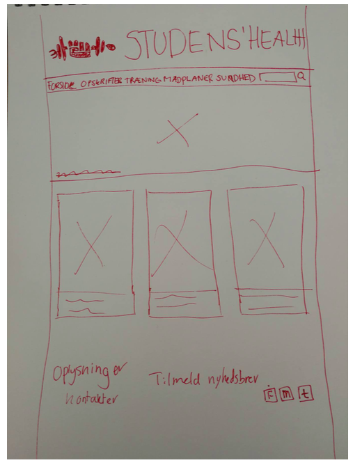

Anne Meinertz
Case 2 - Student's health
RESUME:
Hele uge 41 gik med at lave case 2. Dette var et individuelt projekt, hvilket var en del anderledes end at arbejde i grupper som i case 1. Dette var en meget interessant og travl uge. I denne uge er man blevet udfordret rigtig meget. Udover at det har været en enorm interessant uge, har den også været udfordrende og spændende. Ugen gik enormt hurtigt, dagene fløj afsted med kodning og design.
Artiklerne var blevet lavet den forrige uge samtidig med logoet, så ugen blev brugt rigtig meget på kodningsdelen. Jeg synes man har fået lært utrolig meget, specielt hvis man sammenligner med gruppe projektet (case 1). Ser man på projekt 1 og sammenligner det med denne case, så har jeg lært en del mere. Her var man alene om det hele, og var med i hele processen på en helt anden måde.
Jeg synes at jeg personligt, har lært rigtig meget – specielt i forhold til kodningsdelen. Ser man på denne case og sidste, så havde jeg ingen idé om i case 1, hvad jeg skulle gøre i forhold til kodning. Det var vi faktisk ingen i min daværende gruppe der havde. Dette gjorde det det blev meget forvirrende, fordi der blev gjort nogen ting af nogen i gruppen, som godt kunne vises fra brackets, men på ingen måder var rigtigt. Som f.eks. at lave linjeafstand for at lave siden længere.
Jeg synes ugen gik rigtig godt, dog kan man altid lærer og prioritere tiden bedre således, jeg havde haft mere tid til at lave synopsesen og få den rettet igennem samt at få lavet et lækkert design til den.
I kommunikation og virksomhed fandt jeg ud af, hvem min målgruppe var. Dette gjorde jeg ved hjælp af interviews med de studerende, hvor jeg spurgte dem, hvad de som læsere ville finde interessant og brugbart. Det endelige valg blev ”Sundhed, mad og træning”. Inden en brugerundersøgelse gik jeg i gang med, at se på hvilke problemstillinger, der kunne være inde for dette emne. B.la. hvordan man som studerende kan få mad, træning og SU’en til at hænge sammen, om der var interessante opskrifter, og om de var for krævende i forhold til, hvad man som studerende havde rådighed til. Brugerundersøgelserne gav mig et overblik over, hvilke emner min målgruppe fandt interessant. Som billige opskrifter, tips til træningen og madplaner. Brugerundersøgelserne og et skema over emnerne kan ses nedenfor:

I design var jeg inde og kigge på de forskellige fonte jeg havde benyttet mig af, samt hvilket farvevalg jeg havde taget. Disse farvevalg kom ud fra et moodboards, der var blevet lavet forinden.
I photoshop fik jeg komprimeret billederne, således at performancedelen blev bedre. Her blev der også rettet i billede størrelser. Illustrator har jeg specielt benyttet til at tegne mit logo. Dette var en virkelig svær proces, da jeg udover skulle bruge stregesegmentet/rektangel værktøjet i illustrator også skulle sidde og tegne løst i det. Nedenfor kan min proces samt logo ses:

En ting der vil have gjort det meget lettere for mig selv ville have været, hvis jeg havde lavet mock-ups og ikke kun wireframes. På den måde vil jeg kunne have set, hvordan mit web magasin ville se ud med farver og bokse, når det var kodet. Nedenfor ses mine wireframes.
